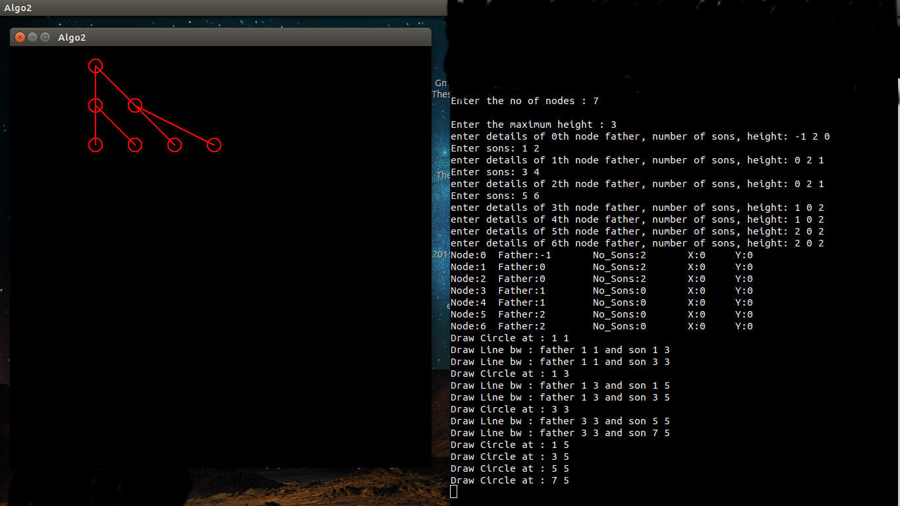

Written by : Manasi Muglikar
>The main constraints considered while writing this algorithm is the first aesthetic that states that all the nodes that are on the same level are in a straight line even if the tree is rotated
Variables used :
Variables used inside the Structure(tree)
The number of sons the node has
The height of the node
x value of node as calculated
y value of node as calculated
Index value of father
Status value of node as assigned
Index values of the sons of the current node(maximum allowed is 10)
Variablefor break condition
An example case
 Right side is the terminal where you input the details, the output is seen in the left side window